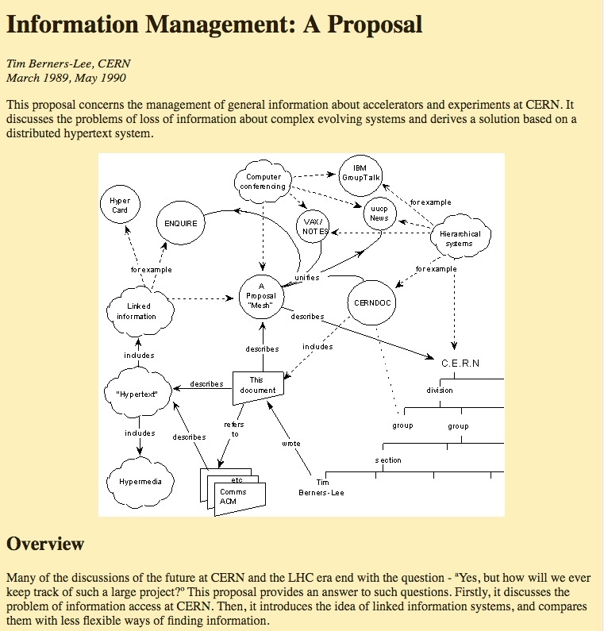

<!doctype html>
<html lang="en">
    <head>
        <meta charset="utf-8">
        <title>reveal-md</title>
        <link rel="stylesheet" href="./css/reveal.css">
        <link rel="stylesheet" href="./css/theme/solarized.css" id="theme">
        <link rel="stylesheet" href="./css/highlight/zenburn.css">
        <link rel="stylesheet" href="./css/print/paper.css" type="text/css" media="print">

    </head>
    <body>

        <div class="reveal">
            <div class="slides"><section  data-markdown><script type="text/template">## Introduction à d3.js pour 2018


28 Février 2018<br>
<small>alain.roan@perceptible.fr - @AlainRoan</small>
</script></section><section  data-markdown><script type="text/template">## Ordre du jour

1. d3js et sa généalogie, quels bacs à sable ?
3. Contributions
2. 2018, Quel js ? Quelle version ? Quels tutoriels ?
4. L'actualité et le futur</script></section><section ><section data-markdown><script type="text/template">
* 1989 – html (CERN)
* 1994 – css (CERN, W3C)
* 1995 – javascript (Netscape)
* 2000 – svg, json (W3C)
* 2004 – DOM (W3C), Canvas (Apple)
* 2006 - jquery (John Resig)
* 2008 – Chrome V8 (Google)
* 2009 – Protovis (Standford University)
* 2010 – nodejs, npm (Ryan Dahl, Joyent)
* 2011 – d3js (Mike Bostock)
* 2013 - React (Facebook)
* 2016 – d3js v4 modulaire sur npm
* 2018 – Observablehq, d3js v5
</script></section><section data-markdown><script type="text/template">
## html 1989 Berners-Lee 
<section data-background-iframe="https://www.w3.org/History/1989/proposal.html">
</section>
##### mémo de 10 pages (Vague but exciting ...)


</script></section><section data-markdown><script type="text/template">
### CSS
Hakon Wium Lie released the first draft of “Cascading HTML Style Sheets” in October 1994.
</script></section><section data-markdown><script type="text/template">
### SVG
The first public draft of SVG was introduced in 1999 and it didn’t become a working draft until a few months later. A year and a half after first introducing SVG, the W3C issued SVG as a candidate recommendation in August 2000.
</script></section><section data-markdown><script type="text/template">## Quelques mots sur js
Un petit langage de script bricolé en 10 jours par Brendan Eich en 1995 chez Mozilla pour le Navigator Netscape.
Heureusement que l'Université lui avait donné des cours de LISP... 

Les fonctions sont des objets de première classe. Une variable est à la fois un objet et une fonction. 
</script></section><section data-markdown><script type="text/template">### JSON (2000)
Devenu un standard d'échanges/ stockage de données
```
  {"firstName": "John",
      "lastName": "Smith",
      "isAlive": true,
      "age": 25,
      "address": {
        "streetAddress": "21 2nd Street",
        "city": "New York",
        "state": "NY",
        "postalCode": "10021-3100"
      },
      "phoneNumbers": [
        {
          "type": "home",
          "number": "212 555-1234"
        },
        {
          "type": "office",
          "number": "646 555-4567"
        },
        {
          "type": "mobile",
          "number": "123 456-7890"
        }
      ],
      "children": [],
      "spouse": null
}```

</script></section></section><section  data-markdown><script type="text/template"><section data-background="d3js.jpeg">
</section>
</script></section><section  data-markdown><script type="text/template">
<!-- .slide: data-background="#ffffff" -->
<section data-background-iframe="http://blockbuilder.org/AlainRo/d177015617b870b90b8b65ce48cc02bd" tyle="border: 0px;" scrolling="no" width="880px" height="400px"></section>
</script></section><section  data-markdown><script type="text/template"><section data-background="js1slide.jpeg">
</section>
</script></section><section  data-markdown><script type="text/template">
<section data-background="d31slide.jpeg">
</section>
</script></section><section  data-markdown><script type="text/template">
### Style fonctionnel et continuation

d3.f(x, y, z) 
  - appel f avec x, y, z et renvoit d3 ou un objet avec ses propres fonctions

Le chaînage permet un style déclaratif concis et élégant.

Attention aux exceptions !!

</script></section><section ><section data-markdown><script type="text/template">
### Selection/ Action

``` javascript
  <body>              -> d3.select('body')
  <div id=‘name’>     -> d3.select(‘#name’)
  <div class=‘name’>  -> d3.select(‘.name’)```


|  | Premier élément      | Tous les éléments         |
| :-----| :------------- |:-------------: |
| La page| d3.select |d3.selectAll |
| La sélection| selection.select |selection.selectAll |

</script></section><section data-markdown><script type="text/template">
#### Par exemple

```javascript
d3.select('.text')
  .style('background','red');

d3.select('svg')
  .attr('height', '100')
  .attr('width', '200');

d3.selectAll('#diagram')
  .data(data)
  .enter()
    .append('circle');
```


</script></section></section><section  data-markdown><script type="text/template">
## gist, bl.ocks et blockbuilder

* Github permet de partager des fragments de code - **gist**
* **bl.ocks.org** (créé par Mike Bostock) permet d'éxecuter /visualiser ces fragments de code 
* **blockbuilder.org** (créé par Ian Johnson) permet d'éditer / exécuter en temps réel ces fragments 


<small>Rob Foweraker (membre du d3js Toulouse) a créé une extension Chrome qui permet d'ajouter un bouton sur github pour aller directement à blockbuilder</small>

</script></section><section ><section data-markdown><script type="text/template">
## d3js comme créateur de svg
<!-- .slide: data-background="#ffffff" -->
<svg width="720" height="120">
  <circle cx="40"  cy="60" r="5"></circle>
  <circle cx="80"  cy="60" r="10"></circle>
  <circle cx="120" cy="60" r="20"></circle>
</svg>

```html 
<svg width="720" height="120">
  <circle cx="40"  cy="60" r="5"></circle>
  <circle cx="80"  cy="60" r="10"></circle>
  <circle cx="120" cy="60" r="20"></circle>
</svg>```

[svg.html](svg.html)</script></section><section data-markdown><script type="text/template">#### select

```javascript
var circle1 = d3.select('circle');

d3.select('circle')
  .style('fill', 'red')
  .attr('r', 30);
```
</script></section><section data-markdown><script type="text/template">#### selectAll
```javascript
var circles = 
  d3.selectAll('circle')
    .style('fill', 'blue')
    .attr('r', 30);
```
</script></section><section data-markdown><script type="text/template">#### data
```javascript
circles
  .data([32,57,112]);

circles
  .attr('r', d => Math.sqrt(d));
```
</script></section><section data-markdown><script type="text/template">#### enter
```javascript
circles =
  d3.select('svg')
    .selectAll('circle')
    .data([32,57,112,293]);

circles.enter() //= 1 cercle
  .append('circle')
  .attr("cy", 60)
  .attr("cx", 160)
  .attr('r', 20)
  .style('fill', 'red');
```
</script></section><section data-markdown><script type="text/template">#### exit
```javascript
circles =
  d3.select('svg')
    .selectAll('circle')
    .data([32,57]);

circles.exit() // = 1 cercle
  .remove();
```
</script></section><section data-markdown><script type="text/template">#### All together

```javascript
var data = [32,57,112,293];

var circles = 
  d3.select('svg')
    .selectAll('circle')
      .data(data);

circles
  .enter()
    .append('circle')
    .attr("cy", 60)
    .attr("cx", (d, i) => i * 100 + 30)
    .attr("r", d => Math.sqrt(d));

circles
  .attr("cy", 60)
  .attr("cx", (d, i) => i * 100 + 30)
  .attr("r", d => Math.sqrt(d));

circles
  .exit()
  .remove();
```
</script></section></section><section  data-markdown><script type="text/template"># 2018

* js en ES6: nouveaux opérateurs (attention à => dans les attr), Promise, async /await
* d3js v4 (ne pas commencer de nouveaux projets en v3) et utiliser la modularité
* oser d3js avec node sur le serveur
* webpack 3 ou 4 (ou équivalent moderne)
* d3 à l'intérieur de React, Angular, Vue, ...
* attention aux "vieux" exemples et tutoriels en v3 et "vieux" javascript

</script></section><section  data-markdown><script type="text/template">
|  | A suivre       | Liens            |
| :-----| :------------- |:-------------: |
|  | Mike Bostock  | <small>d3js.org, bl.ocks.org, observablehq.com</small>|
| | Ian Johnson    | <small>blockbuilder.org </small>   |  
| |SebastianGutierrez| <small>dashingd3js </small>     |   
| | Ben Clinkinbeard | <small>d3in5days  </small>    |  

</script></section><section  data-markdown><script type="text/template">
## d3js v5

 * Remove d3-request; add d3-fetch
 * Remove d3-queue; see Promise.all
 * Add d3-scale-chromatic
 * Add d3-contour
 * Add selection.clone
 * Add d3.create


D3 now includes new categorical color schemes from ColorBrewer, along with ColorBrewer’s excellent diverging and sequential color schemes.

</script></section><section  data-markdown><script type="text/template">
## Observable

[Observable](https://beta.observablehq.com/)


[Cool notebooks](https://beta.observablehq.com/@fil/cool-observable-notebooks)

##### 2 videos Youtube à voir:
  * Observable: An Earthquake Globe in Ten Minutes 
  * Breakout! (40 minutes)
</script></section><section  data-markdown><script type="text/template">
## Idées pour les prochains meetup d3js

* un projet collectif de codage
* react et d3, angular et d3
* commentaire de code 
* ...

</script></section><section  data-markdown><script type="text/template">
### Hackaviz 9 Mars - 19 Mars

[Toulouse-dataviz](http://toulouse-dataviz.fr/)


</script></section></div>
        </div>

        <script src="./lib/js/head.min.js"></script>
        <script src="./js/reveal.js"></script>

        <script>
            function extend() {
              var target = {};
              for (var i = 0; i < arguments.length; i++) {
                var source = arguments[i];
                for (var key in source) {
                  if (source.hasOwnProperty(key)) {
                    target[key] = source[key];
                  }
                }
              }
              return target;
            }

            // Optional libraries used to extend on reveal.js
            var deps = [
              { src: './lib/js/classList.js', condition: function() { return !document.body.classList; } },
              { src: './plugin/markdown/marked.js', condition: function() { return !!document.querySelector('[data-markdown]'); } },
              { src: './plugin/markdown/markdown.js', condition: function() { return !!document.querySelector('[data-markdown]'); } },
              { src: './plugin/highlight/highlight.js', async: true, callback: function() { hljs.initHighlightingOnLoad(); } },
              { src: './plugin/zoom-js/zoom.js', async: true },
              { src: './plugin/notes/notes.js', async: true },
              { src: './plugin/math/math.js', async: true }
            ];

            // default options to init reveal.js
            var defaultOptions = {
              controls: true,
              progress: true,
              history: true,
              center: true,
              transition: 'default', // none/fade/slide/convex/concave/zoom
              dependencies: deps
            };

            // options from URL query string
            var queryOptions = Reveal.getQueryHash() || {};

            var options = {};
            options = extend(defaultOptions, options, queryOptions);
        </script>


        <script>
            Reveal.initialize(options);
        </script>
    </body>
</html>
